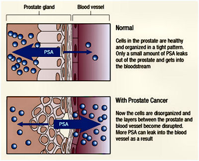
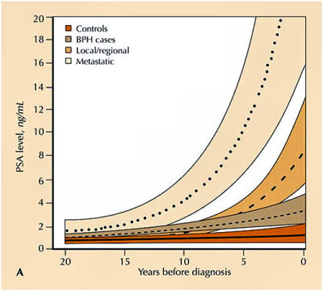

What is PSA?
PSA stands for Prostate Specific Antigen. It is a protein secreted by the prostate gland and was discovered by scientists in the 1970's. This particular protein was only isolated in prostate tissue and hence was called "prostate specific" antigen. PSA is normal and is found in all men. PSA stops sperm cells from sticking together.
Elevated PSA
The concentration of PSA within all the glands of the prostate is very high. (top picture below) Some PSA will leak between the cells of the glands in the prostate and enter blood vessels which leave the prostate gland and travel through the blood in the body. It is this PSA, which is measured in blood samples taken in blood tests.
If there is damage to the cells in the glands of the prostate, then more PSA will leak into the blood stream and patients will have a higher PSA level (see lower picture below). This is the basis of the PSA blood test.
In the left (top) picture, the cells of the gland are tight together and only a small amount of PSA leaks into the blood vessel. In the lower picture, there is damage to the cells in the glands of the prostate and more PSA leaks into the blood stream. These patients will have a higher PSA level. Prostate cancer will cause damage to these cells and allow more PSA to leak out. However, infection (UTI) and inflammation (prostatitis) will also cause damage and lead to an elevated PSA reading. Similarly, ejaculation and vigorous exercise can also cause transient elevated PSA levels.
Also in men with benign enlargement (see BPH), the larger prostate produces more PSA, which results in increased levels of PSA leaking into the blood stream.
PSA blood test and Screening
Prostate cancer, confined to the prostate gland, has no symptoms (apart occasionally for blood in the semen - haematospermia). Therefore the only way of detecting prostate cancer early is through the PSA blood test. This test is not ideal but unfortunately it is the only blood test available at present.
The top diagram shows two curves that do not overlap. One of the goals of prostate cancer research is to identify a "cancer marker" that identifies all patients with and without prostate cancer. Unfortunately, this test has not been found yet. The lower diagram shows the distribution of patients with no cancer and those with prostate cancer as the PSA level increases - please note that the numbers are not to scale; many patients with a PSA greater than 10 do not have cancer.
As you can see, there is cross-over in the middle. Those with a low PSA are unlikely to have cancer and similarly, those with a high PSA likely have cancer. If one wishes to find most people with cancer, then the PSA cut-off level will be low. However, a lot of people who don't have cancer will have further (anxiety inducing) tests. If the PSA reference range were raised, then fewer patients with no cancer would have unnecessary further tests but some patients with cancer would be missed.
PSA levels
We use levels of PSA above which the chance of having prostate cancer is increased. The standard reference range is to allow a PSA value upto 4ng/ml. As a guide, 10% of all men between 50 and 70 years of age will have an elevated PSA. If the PSA is between 4 and 10, then approximately 20% of men will have cancer on further testing.
Prostate cancer is a very slow growing disease and therefore we wish to identify it in younger men sooner.
Thus there are various reference ranges according to age:
40 - 49 : upto 2.5
50 - 59 : upto 3.0
60 - 69 : upto 4.0
over 70 : upto 5.0
PSA Monitoring
In general, patients with significant prostate cancer will have a rising PSA. The reason why regular PSA testing is carried out is to ascertain how the PSA levels are changing over time. Therefore if someone has a normal PSA test, it should be repeated to make sure if isn't rising. Similarly, if one has a high PSA test, one option is to repeat the test as it may also fall.
The study (results shown on the right) was carried out in the United States and started before the PSA test was available. Men gave regular blood samples, which were stored in freezers over 20 years. The researchers identified 4 groups of patients and were able to look back to see how the PSA levels changed for each group over the 20 years before they were diagnosed. The bottom group (controls) had no urological conditions and had very low PSA levels, which remained low over the 20 years. The next group had benign enlargement of the prostate (see BPH) and had a gradual rise in PSA levels.
The next 2 groups (localized and metastatic) have prostate cancer. As you can see, all the groups start with a low PSA but those with cancer have more rapidly rising PSA. (Do not be concerned regarding the actual PSA levels as these numbers are based on the averages of many patients) However, the patients with cancer could be treated if found early. One sign is how the PSA changes over time - this is the basis of regular PSA testing. If the PSA rises by more than 0.75 in 12 months, it should be checked again 3 months later. If it continues to rise, then referral to a urologist should be considered.